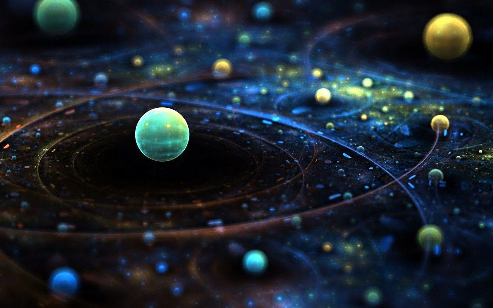

Implications Philosophiques Quantique
Le monde quantique, dans son étrangeté fascinante, nous entraîne dans une aventure qui dépasse le simple cadre scientifique. Il nous invite à revisiter nos conceptions fondamentales de la réalité, du temps, de la causalité et de la nature même de l'être.
L'abandon du déterminisme strict, pierre angulaire de la pensée classique, nous confronte à une réalité où le hasard et la probabilité règnent en maîtres. La particule qui peut être à la fois ici et là-bas, l'onde qui peut se comporter comme une particule, ces concepts bousculent nos intuitions et nous forcent à admettre une certaine part de mystère au cœur même de l'univers.
Loin d'être une fin en soi, cette remise en question devient une source d'humilité et d'émerveillement. Le monde quantique nous révèle une réalité d'une richesse insoupçonnée, où l'observateur et l'observé ne sont plus des entités distinctes, mais participent d'un même ballet quantique. Nous sommes intimement liés à l'univers que nous étudions, et cette connexion fondamentale ouvre la voie à une vision plus holistique de l'existence.
Le voyage dans le monde quantique devient alors un voyage intérieur, une exploration de notre place dans l'univers. Nous découvrons une réalité où l'interconnexion et l'interdépendance sont des principes fondamentaux. L'univers n'est plus un assemblage d'éléments isolés, mais un réseau vibrant d'énergie et d'information.
En contemplant l'infiniment petit, nous prenons conscience de l'infiniment grand. Le monde quantique nous rappelle que nous sommes faits de poussières d'étoiles, que nous portons en nous les secrets de l'univers depuis le Big Bang. Cette humilité face à l'immensité et à la complexité de l'existence peut se transformer en une source d'inspiration et de respect pour la vie sous toutes ses formes.
Le voyage dans le monde quantique n'est pas seulement un voyage intellectuel, c'est aussi un voyage esthétique et poétique. La beauté et l'étrangeté de ce monde nous incitent à la contemplation et à l'émerveillement. En contemplant l'infiniment petit, nous accédons à une dimension de l'univers qui transcende le langage et la logique, et qui nous touche au plus profond de notre être.
Ainsi, le monde quantique nous offre une nouvelle perspective sur la nature de la réalité et notre place dans l'univers. Il nous invite à dépasser les frontières de l'individualisme pour embrasser une vision plus holistique et interconnectée de l'existence. Ce voyage au cœur de l'être, semé d'incertitudes et de questions, nous invite à cultiver l'humilité, l'émerveillement et le respect pour le grand mystère de la vie.
N'est-ce pas là, finalement, la plus belle invitation que la science puisse nous faire ?